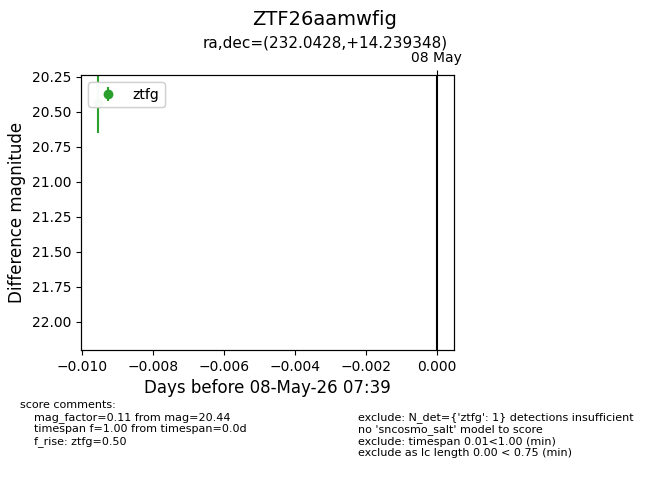
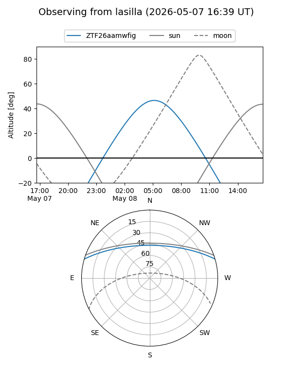
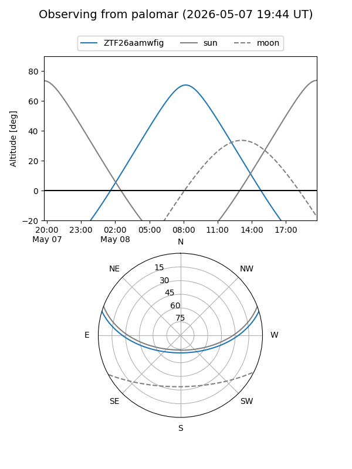

ZTF26aamwfig
Target ZTF26aamwfig at 2026-05-08 07:40
Aliases and brokers:
FINK: link
Lasair: link
ALeRCE: link
alt names
ZTF26aamwfig (ztf,fink_ztf)
Coordinates:
equatorial (ra, dec) = 232.0428,+14.23935
equatorial (HMS+DMS) = 15:28:10.26,+14:14:21.65
galactic (l, b) = (21.5145,+51.33576)
Flags:
Photometry:
last ztfg=20.44
1 ztfg detections
Lightcurve

Visibility


Additional plots